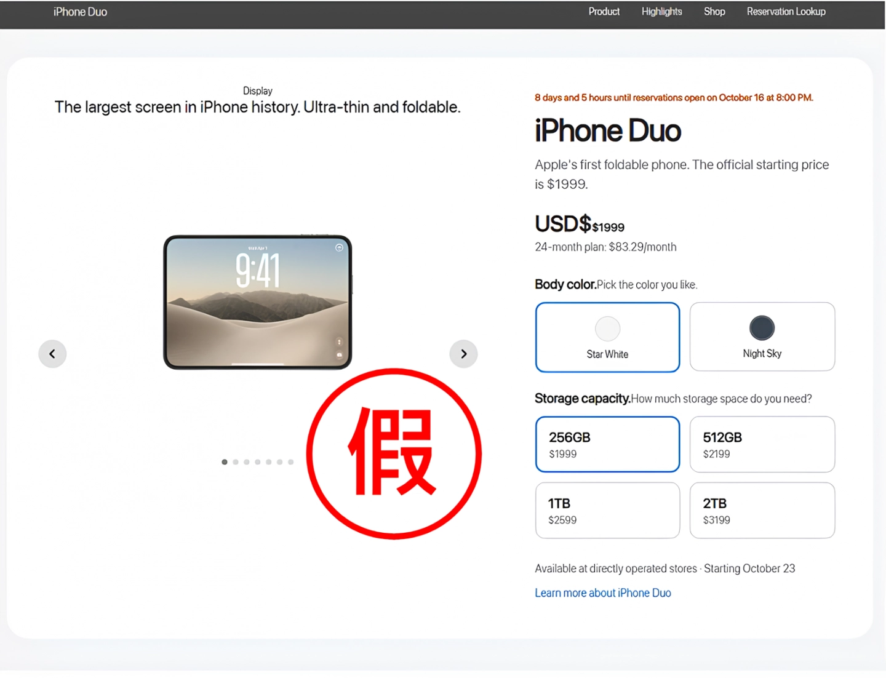
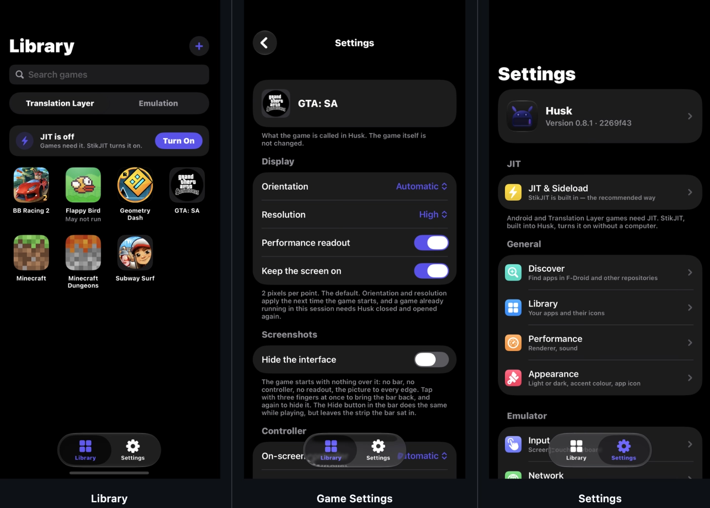
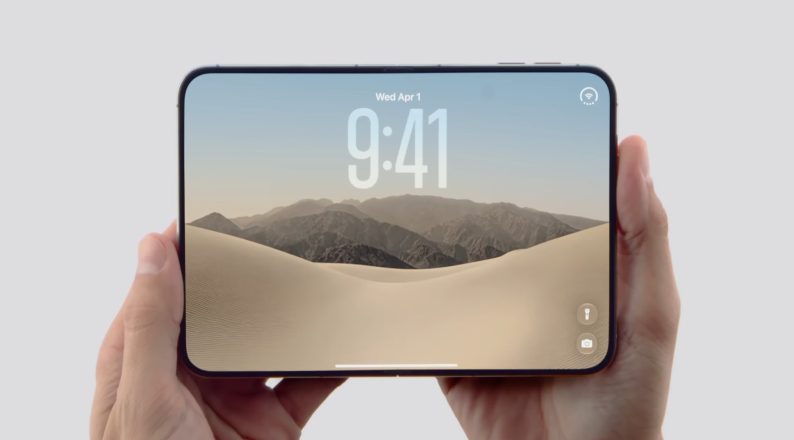

THE TECH EDIT
기술의 변화, 매일 한눈에.
카메라 · 스마트폰 · AI, 해외 테크 소식을 모아 전합니다.
최근 발행2026-10-19
새로 들어온 소식
LATEST STORIES
최신 뉴스
전체 3,813개 기사
Vivo S70, 11월 출시 예정… 탈부착 망원 익스텐더 탑재
TSMC 일본 합작사 JASM, 3nm 공정 전환 위한 제2 팹 건설 일본 경제산업성 승인 획득

보안 기업 트렌드 마이크로: 가짜 Apple iPhone Duo 사전 예약 웹사이트 주의, 해커 피싱 공격 위험 내포
Samsung Galaxy F70, 120Hz AMOLED 디스플레이, 50MP OIS 카메라, Exynos 1330 탑재하여 출시
누비아 V90 Pro 유출, 버건디 iPhone 18 Pro 닮은 108MP 카메라 탑재 예상

한국 반도체 엔지니어, 테슬라 고발: 삼성에 AI 칩 가격 인하 압력, 민감 정보 요구 및 인재 빼가기
한국 재정부 장관 이형일: 반도체 산업의 호황은 적어도 2027년까지 지속될 것

iQOO Neo12 스마트폰, 플래그십 16 모델과 동일한 초감각 터치 칩 탑재 공식 발표, 최대 5000Hz 순간 터치 샘플링 레이트 지원

오픈소스 프로젝트 Husk 2.0 공개: 자체 개발 번역 레이어로 Apple iPhone에서 Android 게임 실행, 150개 이상 앱 호환

IT 모닝 브리핑 1018: Huawei의 새로운 서브 브랜드 '스타라이트(星芒)' 스마트폰, 온라인 가성비 시장 공략; 체리(奇瑞)의 지제(智界), 독립 자동차 생산 자격 승인 예정; DeepSeek V4.1 Flash-1017 새 버전 출시; NVIDIA, RTX 5090 단종 루머 부인...

허강, 중양절 맞아 Huawei 스마트폰의 유용한 기능 공유: 스팸 전화 차단, 어르신 원격 지원

Huawei Pura X Max 폴더블 스마트폰 판매량 100만 대 돌파, 표준 버전이 컬렉션 버전을 성공적으로 "추월"

Huawei nova 12/13 시리즈 스마트폰, HarmonyOS 7 화웨이 팬 베타 업그레이드 출시: 원격 공유, 직접 전원 공급 등 기능 추가

Honor WIN2 스마트폰, 게이밍 WIN 키 탑재: 3단계 진동 조절, 반응 감도, 게임 내 자유로운 키 매핑 지원

Honor WIN 2 시리즈 스마트폰, Honor 훙옌 통신 및 새로운 자체 개발 RF 강화 칩 HONOR C3 탑재 공식 발표
DOOGEE Note60 W 시리즈 스마트폰 공개: 6.38인치 90Hz 와이드 스크린 디자인, Huawei Pura X View와 유사

구르만: Apple, iPhone 듀오 폴더블 디스플레이 스마트폰 공급 부족 알면서도 금요일 사전 판매 강행

Apple, 예약 없는 고객에게는 판매 거부 지시: iPhone Duo 출시 당일 재고 거의 없을 것

Apple iPhone 듀오 징둥 독점 혜택 패키지 출시, 20,998위안부터 20시부터 구매 가능
비전옥, Honor와 2K 185Hz 게이밍 디스플레이 세계 최초 공개, WIN2 시리즈 스마트폰 전 모델 탑재

Viltrox AF 26mm F2.8 EVO Sony FE 마운트 렌즈, 문 실버 및 록 그레이 색상 추가, 쿠폰 적용 시 1,419위안
검색 결과가 없습니다
다른 검색어를 입력하거나 필터를 초기화해 보세요.